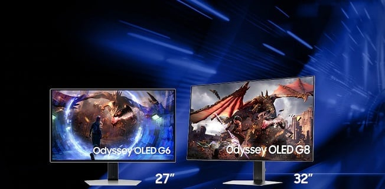
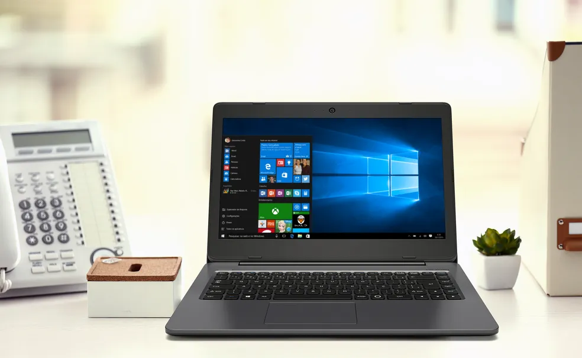

Samsung lança monitores gamer Odyssey OLED G8 e G6 com tela de até 360 Hz
postado 04/06/2024 12h42 A Samsung lançou, nesta terça-feira (4), os novos monitores monitores Odyssey OLED G8 e OLED G6, ambos com tecnologia OLED nas telas. Os modelos são voltados para o público gamer, com hardware e recursos atualizados em relação às versões anteriores da linha. Como destaque, é possível encontrar os recursos OLED Glare-Free, que promete diminuir os reflexos de luz na superfície, assim como o tempo de resposta de 0,03 ms para uma gameplay sem atrasos.
Leia maisNotebook pequeno: 5 modelos leves para carregar sem peso nas costas
postado 02 de junho 2024 Os notebooks pequenos oferecem uma combinação de portabilidade e desempenho que os torna interessante tanto para profissionais que precisam de fichas técnicas poderosas quanto para quem tem um uso mais casual e só quer navegar na Internet ou assistir a vídeos. O Galaxy Book3 360 e o Dell XPS 13 Plus, por exemplo, são dois modelos com telas de 13 polegadas, mas que não abrem mão de especificações competitivas e se destacam pela qualidade do uso.
Leia mais